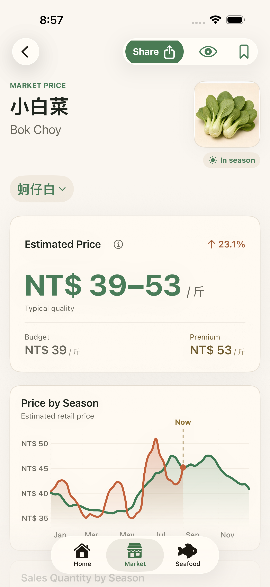

App 問題
請附上 iOS 版本、App 版本、裝置型號、發生問題的畫面，以及可以重現問題的步驟。

提出請求前
請附上 iOS 版本、App 版本、裝置型號、發生問題的畫面，以及可以重現問題的步驟。
請附上蔬果名稱、畫面上看到的市場日期、攤位報價、數量單位，以及有助於判斷的在地脈絡。
GitHub Issues 可能是公開的。請不要在支援請求中放入敏感個人資訊。
Taiwan Market MCP
MCP 整合正在準備發布，工具可直接依名稱查詢蔬果與水產品估價，也可瀏覽商品目錄，不需要安裝 iOS App。
如遇 MCP 問題，請提供工具名稱、商品名稱、資料日期與問題說明，使用上方相同的 GitHub 支援連結。請勿附上對話內容、使用者識別碼、權杖或其他敏感資訊。
請查看各筆結果的資料日期。「最新可用」是指已發布的市場交易日範圍，可能不是今天。歷史價格與缺少價格的情況會另行標示，任何結果都不能確認攤位是否有貨。
請告訴 ChatGPT：「這次使用 Taiwan Market 時，請不要記錄使用統計。」助理必須在每次工具呼叫設定 record_usage: false，這些呼叫就不會產生我們的自訂統計。詳情請見隱私權政策。
常見問題
請在穩定網路環境下開啟 App，並在首頁下拉重新整理。App 會先下載清單，再驗證市場資料檔案後顯示內容。
不是。價格是買菜時比較用的估計值。攤位價格可能因品質、地區、天氣、時間與賣家而不同。
不需要。收藏、篩選條件與設定都儲存在你的裝置上，不需要帳號登入。